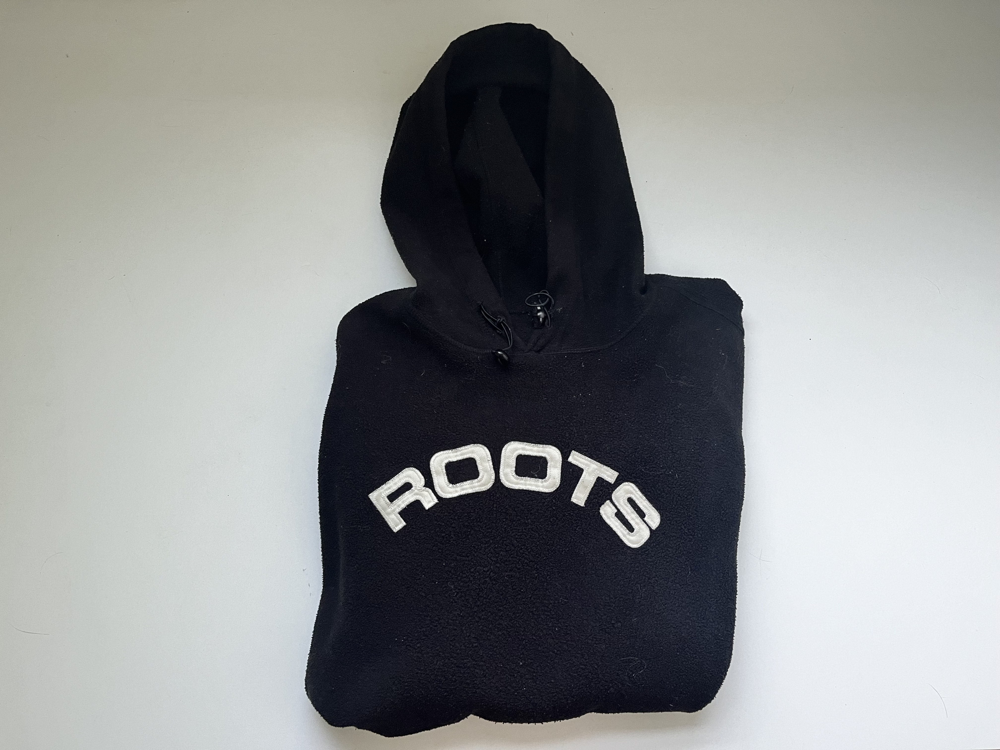

NHLPA Crewneck

Kuya Ronnie's. 15 years ago.
This is an XXL Roots hoodie. It is way too large on me and fits more like a big nightgown rather than a hoodie. I took this from my family home. My Mom got it from her cousin, my Kuya Ronnie.
I should really be calling him Tito Ronnie, the Filipino word for Uncle, but growing up, my Kuya Ronnie was always at my house. We would bake and play cards-- I always won in Crazy 8's and he would swear I was cheating.
He would help me with anything I asked, and entertain the silliest requests I had.
The word Kuya in Tagalog means elder brother. While I have three older brothers, I never really call them "Kuya." Growing up I didn't find much common ground for activities with my brothers. They would crowd around the Xbox playing games that involved guns, zombies, soliders-- taking turns passing around the controller after one of them died in the game. So, I would revert to doing quieter things on my own: arts and crats, reading, writing, or simply watching my brothers play.
Except when Kuya Ronnie would come over-- he too preferred watching rather than participating. But, together we would sew, cook, play checkers and clean. Naturally, not that I am away from home, I begin to foret about the small but meaningful moments I experienced while growing up. Items such as this exceptionally large hoodie remind me of those times-- especially during the cold Canadian winters, when comfort like this is needed the most.
Artifact Metadata
| Type | Description |
|---|---|
| Name | Roots Hoodie |
| Collection | Wardrobe |
| Origin | My Kuya Ronnie |
| Date | N/A |
| Location | Markham, ON |
| Condition | Used |
| Colour | Black, White |
Roots Athletics Black Fleece Hoodie
This hoodie is my go-to when the temperature actually starts to bite. While my other sweatshirts are for lounging, this one feels like it was made for the outdoors—camping trips, late-night bonfires, or just those winter days when a regular cotton layer doesn't cut it.
I’ve always liked how the white "Roots" lettering pops against the black; it feels a bit more modern and sleek than the vintage grey versions. It’s incredibly lightweight for how warm it is, which is why it usually ends up packed in my bag for any trip where the weather is unpredictable. It’s one of those pieces that has survived every closet purge because it’s just too practical to let go. Every time I pull the hood up and tighten those toggles, it feels like I’m ready for whatever the weather is throwing at me.
Artifact Metadata
| Type | Description |
|---|---|
| Field | Details |
| Title/Name | Roots Athletics Black Fleece Hoodie |
| Date | Estimated early-to-mid 2000s |
| Material | Synthetic polar fleece (Black) |
| Physical Description | Pullover hoodie with adjustable drawstring toggles at the neck. Features "ROOTS" in arched, white embroidered block letters across the chest. The fabric has a soft, matte pile characteristic of cold-weather fleece. |
| Condition | Good. The black pigment remains quite dark, though the fleece shows slight "fuzzing" or pilling from friction and washing. The embroidery is clean and holds its original brightness. |
| Provenance | Canadian heritage apparel; high-insulation leisurewear. |